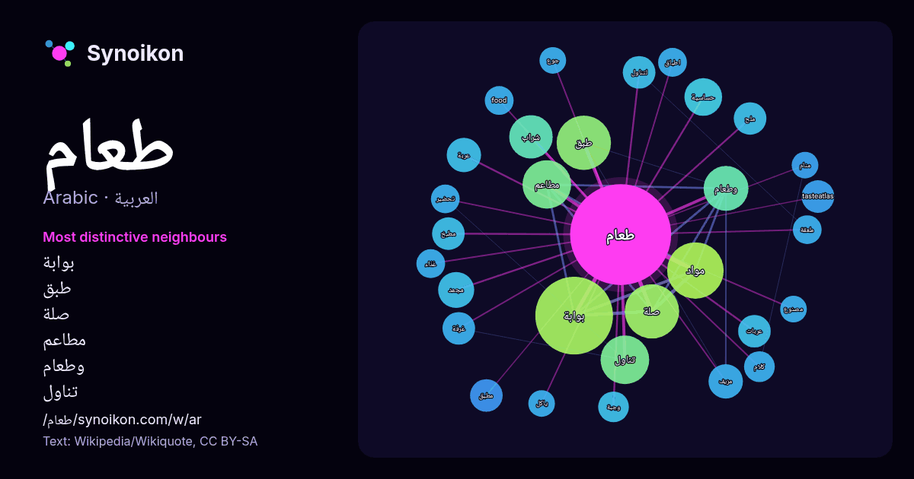

العربية · كلمة شائعة
طعام
“food” · الكلمات الموجودة حولها في 609 ورودًا من ويكيبيديا, Wikiquote.

الجيران الأكثر تميّزًا
- بوابة 45×
- طبق 23×
- صلة 20×
- مطاعم 19×
- وطعام 18×
- تناول 18×
- شراب 16×
- مواد 14×
- مجمد 12×
- حساسية 11×
- مزيف 11×
- عربة 10×
- tasteatlas 10.0×
- مطبق 9.8×
- لتناول 9.8×
- عربات 9.4×
- مطبخ 9.1×
- ملح 9.0×
- وجبة 8.6×
- food 8.0×
× = كم مرة أكثر مما في نصوص ويكيبيديا العامة.
الجيران الأكثر تكرارًا
- بوابة 51
- مواد 27
- صلة 25
- طبق 25
- تناول 20
- مطاعم 20
- وطعام 17
- شراب 16
- موقع 15
- قائمة 13
- حساسية 12
- مجمد 11
- نوع 11
- عربة 10
- مزيف 10
- tasteatlas 9
- اطفال 9
- عادة 9
- عربات 9
- غرفة 9
في السياق
- هو أي مادة يتم استهلاكها لتوفير الدعم الغذائي للكائن الحي. عادة ما يكون الطعام من أصل نباتي أو حيواني أو فطري، ويحتوي على العناصر الغذائية الأساسية، مثل Wikipedia snippets · طعام
- أبريل 2013.{{استشهاد بويب}}: صيانة الاستشهاد: الأرشيف كعنوان (link) في كومنز مواد ذات صلة بـ من (طعام). بوابة إسرائيل بوابة الأديان بوابة مطاعم وطعام Wikipedia snippets · من (طعام)
- في فن الأكل، الطبق هو طعام محضر بطريقة معينة، بحيث يكون طبخه مكتمل وجاهز للأكل أو التقديم. يتم تقديم الطبق في آنية أو يمكن أكله باليد، ويشار إلى أن الخبز Wikipedia snippets · طبق (طعام)
- عربة الطعام (الإنجليزية: Food cart) هي مطبخ متنقل يُقام في الشارع لتحضير وبيع الطعام للمارة. غالبًا ما تُوجد عربات الطعام في المدن حول العالم، حيث تقدم Wikipedia snippets · عربة طعام
- وتونس وغرب ليبيا ومصر وموريتانيا أو البَرْبُوشَة في شرق بالجزائر) وحتى الطْعَام في المغرب والغرب الجزائري. ذكر بن دريد كلمة (كسكس) في جمهرة اللغة في القرن Wikipedia snippets · كسكس
- حافلة الطعام هي عربة ركاب على السكك الحديدية تقدم وجبات الطعام بطريقة مطعم جلوس متكامل الخدمات. منير البعلبكي؛ رمزي البعلبكي (2008). المورد الحديث: قاموس Wikipedia snippets · حافلة طعام
- طعامٌ، صلاةٌ، حبّ: امرأة تبحث عن كل شيء (الإنجليزية: Eat, Pray, Love: One Woman's Search for Everything Across Italy, India and Indonesia؛ أو Eat, Pray Wikipedia snippets · طعام، صلاة، حب
- … الأصل في 2019-04-25. بوابة العراق بوابة بغداد بوابة النجف بوابة مطاعم وطعام بوابة إيران في كومنز مواد ذات صلة بـ قيمة (طعام). Wikipedia snippets · قيمة (طعام)
كلمات أخرى
- أغنية
- إله
- تاريخ
- جبل
- جرس
- جزيرة
- جسر
- حديقة
- حصان
- حقيقة
- حياة
- خبز
- خريطة
- خريف
- ذهب
- زمن
- ساعة
- شاي
- شتاء
- صحة
- صحراء
- صمت
- صيف
- طبيعة
- طريق
- ظل
- عائلة
- عاصفة
- عسل
- علم
- عمل
- غابة
- فن
- قطار
- قطة
- قلب
- قوة
- كلب
- لغة
- ماء
- مال
- مدينة
- مرآة
- مطر
- ملح
- مناخ
- موت
- نجم
- والدة
حُسبت مسبقًا في 2026-10-09 بالإعدادات الافتراضية (±5 كلمات، مدوّنة متوسطة). يمكن للخريطة التفاعلية تحديثها ببيانات حية.
واجهة مترجمة آليًا؛ نرحب بالتصحيحات.